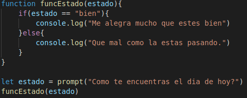
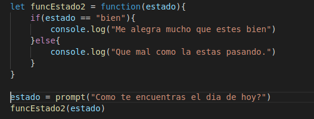
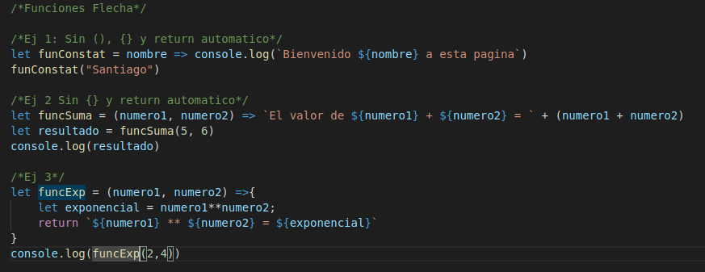

Lección 7 - Funciones
Definición: Es una porción de codigo que puede ser llamado por su nombre para ser ejecutado desde diferentes partes del codigo.
Estructura de funciones:
-
Estructura 1:
- Palabara reservada function
- nombre de la funciones
- parentesis(parametros)
- {} bloque, dentro de este va la porción de codigo.

-
Estructura 2: Este tipo de estructura es basicamente asignandole una función a una variable.
- Nombre de la variable.
- =
- Palabara reservada function
- parentesis(parametros)
- {} bloque, dentro de este va la porción de codigo.

-
Función flecha: Este tipo de función
- Nombre de la variable
- =
- parentesis(parametros) Si es un unico parametro no es necesario poner parentesis
- =>
- {} bloque, dentro de este va la porción de codigo. Si es una unica linea de codigo no necesitamos {}

Sentencias importantes:
- return: Es una sentencia que se coloca en las funcione cuando queremos devolver algo cuando esta es llamada.